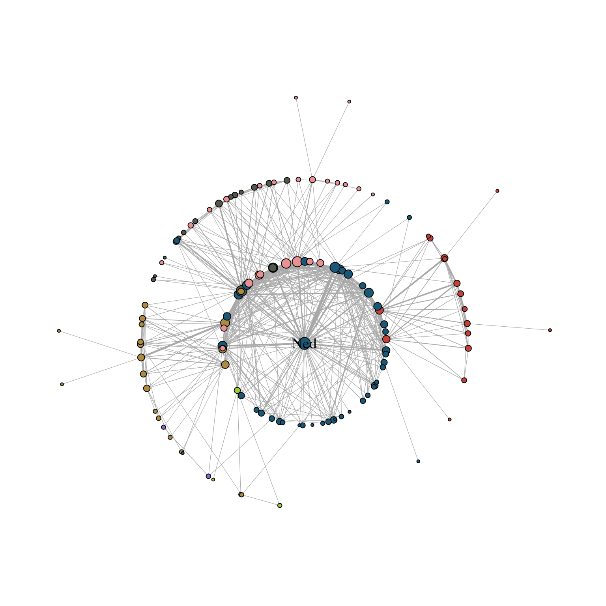

While “stress” is the key layout algorithm in graphlayouts, there are other, more specialized layouts that can be used for different purposes. In this part, we work through some examples with concentric layouts and learn how to disentangle extreme “hairball” networks.
14.1 Concentric layouts
Circular layouts are generally not advisable. Concentric circles, on the other hand, help to emphasize the position of certain nodes in the network. The graphlayouts package has two function to create concentric layouts, layout_with_focus() and layout_with_centrality().
The first one allows to focus the network on a specific node and arrange all other nodes in concentric circles (depending on the geodesic distance) around it. Below we focus on the character Ned Stark.
Warning: Using the `size` aesthetic in this geom was deprecated in ggplot2 3.4.0.
ℹ Please use `linewidth` in the `default_aes` field and elsewhere instead.

The parameter focus in the first line is used to choose the node id of the focal node. The function coord_fixed() is used to always keep the aspect ratio at one (i.e. the circles are always displayed as a circle and not an ellipse).
The function draw_circle() can be used to add the circles explicitly.
layout_with_centrality() works in a similar way. You can specify any centrality index (or any numeric vector for that matter), and create a concentric layout where the most central nodes are put in the center and the most peripheral nodes in the biggest circle. The numeric attribute used for the layout is specified with the cent parameter. Here, we use the weighted degree of the characters.
(Concentric layouts are not only helpful to focus on specific nodes, but also make for a good tool to visualize ego networks.)
14.2 Backbone layout
layout_as_backbone() is a layout algorithm that can help emphasize hidden group structures. To illustrate the performance of the algorithm, we create an artificial network with a subtle group structure using sample_islands() from igraph.
g <-sample_islands(9, 40, 0.4, 15)g <-simplify(g)V(g)$grp <-as.character(rep(1:9, each =40))
The network consists of 9 groups with 40 vertices each. The density within each group is 0.4 and there are 15 edges running between each pair of groups. Let us try to visualize the network with what we have learned so far.
As you can see, the graph seems to be a proper “hairball” without any special structural features standing out. In this case, though, we know that there should be 9 groups of vertices that are internally more densely connected than externally. To uncover this group structure, we turn to the “backbone layout”.
The idea of the algorithm is as follows. For each edge, an embededness score is calculated which serves as an edge weight attribute. These weights are then ordered and only the edges with the highest score are kept. The number of edges to keep is controlled with the keep parameter. In our example, we keep the top 40%. The parameter usually requires some experimenting to find out what works best. Since this may result in an unconnected network, we add all edges of the union of all maximum spanning trees. The resulting network is the “backbone” of the original network and the “stress” layout algorithm is applied to this network. Once the layout is calculated, all edges are added back to the network.
The output of the function are the x and y coordinates for nodes and a vector that gives the ids of the edges in the backbone network. In the code above, we use this vector to create a binary edge attribute that indicates if an edge is part of the backbone or not.
To use the coordinates, we set the layout parameter to “manual” and provide the x and y coordinates as parameters.
The groups are now clearly visible! Of course the network used in the example is specifically tailored to illustrate the power of the algorithm. Using the backbone layout in real world networks may not always result in such a clear division of groups. It should thus not be seen as a universal remedy for drawing hairball networks. Keep in mind: It can only emphasize a hidden group structure if it exists.
The plot below shows an empirical example where the algorithm was able to uncover a hidden group structure. The network shows facebook friendships of a university in the US. Node colour corresponds to dormitory of students. Left is the ordinary stress layout and right the backbone layout.
14.3 Dynamic networks
People regularly ask me if it is possible to animate a network evolution with ggraph and gganimate. Unfortunately this is not yet possible. But fear not! There is a way to still get it done with some hacking around the ggraph package. I will walk through this hack below but hope that it will eventually become obsolete.
For this part of the tutorial, you will need two additional packages.
We will be using the 50 actor excerpt from the Teenage Friends and Lifestyle Study from the RSiena data repository as an example. The data is part of the networkdata package.
data("s50")
The dataset consists of three networks with 50 actors each and a vertex attribute for the smoking behaviour of students. As a first step, we need to create a layout for all three networks. You can basically use any type of layout for each network, but I’d recommend layout_as_dynamic() from my very own package {{graphlayouts}}. The algorithm calculates a reference layout which is a layout of the union of all networks and individual layouts based on stress minimization and combines those in a linear combination which is controlled by the alpha parameter. For alpha=1, only the reference layout is used and all graphs have the same layout. For alpha=0, the stress layout of each individual graph is used. Values in-between interpolate between the two layouts.
xy <-layout_as_dynamic(s50, alpha =0.2)
This graph was created by an old(er) igraph version.
Call upgrade_graph() on it to use with the current igraph version
For now we convert it on the fly...
This graph was created by an old(er) igraph version.
Call upgrade_graph() on it to use with the current igraph version
For now we convert it on the fly...
This graph was created by an old(er) igraph version.
Call upgrade_graph() on it to use with the current igraph version
For now we convert it on the fly...
Now you could use {{ggraph}} and {{patchwork}} to produce a static plot with all networks side-by-side.
This is nice but of course we want to animate the changes. This is where we say goodbye to ggraph and hello to good-old ggplot2. First, we create a list of data frames for all nodes and add the layout to it.
nodes_lst <-lapply(1:length(s50), function(i) {cbind(igraph::as_data_frame(s50[[i]], "vertices"),x = xy[[i]][, 1], y = xy[[i]][, 2], frame = i )})
This was the easy part, because all nodes are present in all time frames so there is not much to do. Edges will be a lot trickier.
This is used to impute the edges into all networks. So any edge that is not present in time frame two and three gets added to time frame one. But to keep track of these, we set there status to FALSE.
Why are we doing this? After a lot of experimenting, I came to the conclusion that it is always best to draw all edges, but use zero opacity if status = FALSE. In that way, one gets a smoother transition for edges that (dis)appear. There are probably other workarounds though.
In the last step, we create a data frame out of the lists.
And that’s it in terms of data wrangling. All that is left is to plot/animate the data.
ggplot() +geom_segment(data = edges_df,aes(x = x, xend = xend, y = y, yend = yend, group = id, alpha = status),show.legend =FALSE ) +geom_point(data = nodes_df, aes(x, y, group = name, fill =as.factor(smoke)),shape =21, size =4, show.legend =FALSE ) +scale_fill_manual(values =c("forestgreen", "grey25", "firebrick")) +scale_alpha_manual(values =c(0, 1)) +ease_aes("quadratic-in-out") +transition_states(frame, state_length =0.5, wrap =FALSE) +labs(title ="Wave {closest_state}") +theme_void()
14.4 Multilevel networks
In this section, you will get to know layout_as_multilevel(), a layout algorithm in the raphlayouts package which can be use to visualize multilevel networks.
A multilevel network consists of two (or more) levels with different node sets and intra-level ties. For instance, one level could be scientists and their collaborative ties and the second level are labs and ties among them, and inter-level edges are the affiliations of scientists and labs.
The graphlayouts package contains an artificial multilevel network which will be used to illustrate the algorithm.
data("multilvl_ex")
The package assumes that a multilevel network has a vertex attribute called lvl which holds the level information (1 or 2).
The underlying algorithm of layout_as_multilevel() has three different versions, which can be used to emphasize different structural features of a multilevel network.
Independent of which option is chosen, the algorithm internally produces a 3D layout, where each level is positioned on a different y-plane. The 3D layout is then mapped to 2D with an isometric projection. The parameters alpha and beta control the perspective of the projection. The default values seem to work for many instances, but may not always be optimal. As a rough guideline: beta rotates the plot around the y axis (in 3D) and alpha moves the POV up or down.
14.4.0.1 Complete layout
A layout for the complete network can be computed via layout_as_multilevel() setting type = "all". Internally, the algorithm produces a constrained 3D stress layout (each level on a different y plane) which is then projected to 2D. This layout ignores potential differences in each level and optimizes only the overall layout.
xy <-layout_as_multilevel(multilvl_ex, type ="all", alpha =25, beta =45)
This graph was created by an old(er) igraph version.
Call upgrade_graph() on it to use with the current igraph version
For now we convert it on the fly...
To visualize the network with ggraph, you may want to draw the edges for each level (and inter level edges) with a different edge geom. This gives you more flexibility to control aesthetics and can easily be achieved with a filter.
In many instances, there may be different structural properties inherent to the levels of the network. In that case, two layout functions can be passed to layout_as_multilevel() to deal with these differences. In our artificial network, level 1 has a hidden group structure and level 2 has a core-periphery structure.
To use this layout option, set type = "separate" and specify two layout functions with FUN1 and FUN2. You can change internal parameters of these layout functions with named lists in the params1 and params2 argument. Note that this version optimizes inter-level edges only minimally. The emphasis is on the intra-level structures.
This layout can be used to emphasize one intra-level structure. The layout of the second level is calculated in a way that optimizes inter-level edge placement. Set type = "fix1" and specify FUN1 and possibly params1 to fix level 1 or set type = "fix2" and specify FUN2 and possibly params2 to fix level 2.
Instead of the default 2D projection, layout_as_multilevel() can also return the 3D layout by setting project2d = FALSE. The 3D layout can then be used with e.g. threejs to produce an interactive 3D visualization.